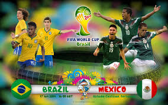

How will Mexico do on this next part of their journey?
The next part in Mexico's Germany will be against another favorite to win the world cup. The five time
winners Brazil. This will be an intense rematch from the 2014 World Cup.

The last time they faced, it was the in the 2014 World Cup group stages. Mexico's goalie Ochoa played the match
of his life and left Neymar and co. scoreless.